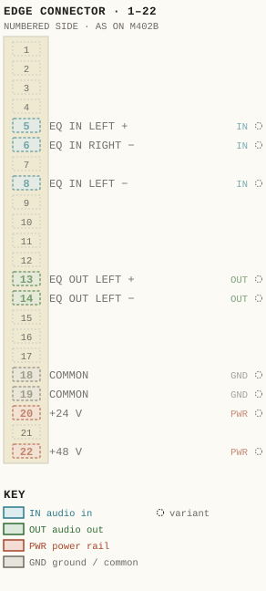
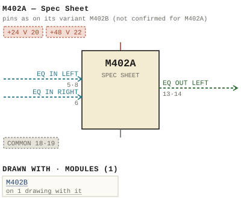

M402A — Spec Sheet
| Type | module |
| Category | FILTERS |
| Try it | simulator & front panel · download package (zip) |
| Earliest dated evidence | 1968|1 — estimate from a dated variant |
| Evidence | from M402 |
| Confidence | family |
| Variants | M402, M402B |
| Folder | DOCUMENTS/RECENT SCANS/WBSps.ca 20210323 - Scans |
| Folder | Modules/FILTERS/M402A |
Connections and circuit (ideal SPICE model)
Inputs, outputs, power and control as its own documents name them (no RTO-144 sheet for it: pin numbers only where the page gives them). Run the generator, turn the gain, watch the VU.
Pictures


M402A.pinout.svg

M402A.connections.svg 1968 - M402A - 144-06-002 - MIN BEND RAD UNESS SPECIFIED.jpg
1968 - M402A - 144-06-002 - MIN BEND RAD UNESS SPECIFIED.jpg 1968 - M402A - Archived - wbsps - promo - m402a eq - 005.jpg
1968 - M402A - Archived - wbsps - promo - m402a eq - 005.jpg 1968 - M402A - B 402-02-010 - M402A EFFECTS - EQUALIZER SCHEMATIC.jpg
1968 - M402A - B 402-02-010 - M402A EFFECTS - EQUALIZER SCHEMATIC.jpg 1968 - M402A - P1.jpg
1968 - M402A - P1.jpg 1968 - M402A - P10.jpg
1968 - M402A - P10.jpg 1968 - M402A - P11.jpg
1968 - M402A - P11.jpg 1968 - M402A - P12.jpg
1968 - M402A - P12.jpg 1968 - M402A - P13.jpg
1968 - M402A - P13.jpg 1968 - M402A - P14.jpg
1968 - M402A - P14.jpg 1968 - M402A - P15.jpg
1968 - M402A - P15.jpg 1968 - M402A - P16.jpg
1968 - M402A - P16.jpg 1968 - M402A - P17.jpg
1968 - M402A - P17.jpg 1968 - M402A - P18.jpg
1968 - M402A - P18.jpg 1968 - M402A - P19.jpg
1968 - M402A - P19.jpg 1968 - M402A - P2.jpg
1968 - M402A - P2.jpg 1968 - M402A - P20.jpg
1968 - M402A - P20.jpg 1968 - M402A - P21.jpg
1968 - M402A - P21.jpg 1968 - M402A - P22.jpg
1968 - M402A - P22.jpg 1968 - M402A - P23.jpg
1968 - M402A - P23.jpg 1968 - M402A - P24.jpg
1968 - M402A - P24.jpg 1968 - M402A - P25.jpg
1968 - M402A - P25.jpg 1968 - M402A - P26.jpg
1968 - M402A - P26.jpg 1968 - M402A - P27.jpg
1968 - M402A - P27.jpg 1968 - M402A - P28.jpg
1968 - M402A - P28.jpg 1968 - M402A - P3.jpg
1968 - M402A - P3.jpg 1968 - M402A - P4.jpg
1968 - M402A - P4.jpg 1968 - M402A - P5.jpg
1968 - M402A - P5.jpg 1968 - M402A - P6.jpg
1968 - M402A - P6.jpg 1968 - M402A - P7.jpg
1968 - M402A - P7.jpg 1968 - M402A - P8.jpg
1968 - M402A - P8.jpg 1968 - M402A - P9.jpg
1968 - M402A - P9.jpg 1968 - M402A - Ward Beck Systems M402A 1.jpg
1968 - M402A - Ward Beck Systems M402A 1.jpg 1968 - M402A - Ward Beck Systems M402A 2.jpg
1968 - M402A - Ward Beck Systems M402A 2.jpg 1968 - M402A - Ward Beck Systems M402A 3.jpg
1968 - M402A - Ward Beck Systems M402A 3.jpg 1968 - M402A - Ward Beck Systems M402A 4.jpg
1968 - M402A - Ward Beck Systems M402A 4.jpg 1968 - M402A - wbsps - module - m402a eq - 001.jpg
1968 - M402A - wbsps - module - m402a eq - 001.jpg 1968 - M402A - wbsps - module - m402a eq - 002.jpg
1968 - M402A - wbsps - module - m402a eq - 002.jpg 1968 - M402A - wbsps - module - m402a eq - 003.jpg
1968 - M402A - wbsps - module - m402a eq - 003.jpg 1968 - M402A - wbsps - module - m402a eq - 004.jpg
1968 - M402A - wbsps - module - m402a eq - 004.jpg 1968 - M402A - wbsps - module - m402a equalizer 001.jpg
1968 - M402A - wbsps - module - m402a equalizer 001.jpg 1968 - M402A - wbsps - module - m402a equalizer 001_small.jpg
1968 - M402A - wbsps - module - m402a equalizer 001_small.jpg 1968 - M402A - wbsps - promo - m402a eq - 001.jpg
1968 - M402A - wbsps - promo - m402a eq - 001.jpg 1968 - M402A - wbsps - promo - m402a eq - 001_small.jpg
1968 - M402A - wbsps - promo - m402a eq - 001_small.jpg 1968 - M402A - wbsps - promo - m402a eq - 002.jpg
1968 - M402A - wbsps - promo - m402a eq - 002.jpg 1968 - M402A - wbsps - promo - m402a eq - 002_small.jpg
1968 - M402A - wbsps - promo - m402a eq - 002_small.jpg 1968 - M402A - wbsps - promo - m402a eq - 003.jpg
1968 - M402A - wbsps - promo - m402a eq - 003.jpg 1968 - M402A - wbsps - promo - m402a eq - 003_small.jpg
1968 - M402A - wbsps - promo - m402a eq - 003_small.jpg 1968 - M402A - wbsps - promo - m402a eq - 004.jpg
1968 - M402A - wbsps - promo - m402a eq - 004.jpg 1968 - M402A - wbsps - promo - m402a eq - 004_small.jpg
1968 - M402A - wbsps - promo - m402a eq - 004_small.jpg 1968 - M402A - wbsps - promo - m402a eq - 006.jpg
1968 - M402A - wbsps - promo - m402a eq - 006.jpg 19xx - M402A - M402A.jpg
19xx - M402A - M402A.jpg 19xx - M402A - M402B.jpg
19xx - M402A - M402B.jpg 459px-Wbsps_-_module_-_m402a_eq_-_002.jpg
459px-Wbsps_-_module_-_m402a_eq_-_002.jpg Ward Beck Systems M402A 4.jpg
Ward Beck Systems M402A 4.jpg wbsps - module - m402a eq - 002.jpg
wbsps - module - m402a eq - 002.jpg wbsps - promo - m402a eq - 002.jpg
wbsps - promo - m402a eq - 002.jpg 1969 - 402-03-004 - SWITCH MTG BRKT M402A - ISS 4.jpg
1969 - 402-03-004 - SWITCH MTG BRKT M402A - ISS 4.jpgPinout & connections
No page of its own numbers M402A's contacts: these are its variant M402B's, drawn faded — not confirmed for M402A.
pinout (SVG) · connections (SVG) · pins (JSON)
Pin evidence — 9 contacts
| Pin | Signal | Kind | Confidence | Read from | Source |
|---|---|---|---|---|---|
| 5 | EQ IN LEFT | audio in | variant | rto-144 | M402B.rto144.json, p. 1 |
| 6 | EQ IN RIGHT | audio in | variant | rto-144 | M402B.rto144.json, p. 1 |
| 8 | EQ IN LEFT | audio in | variant | rto-144 | M402B.rto144.json, p. 1 |
| 13 | EQ OUT LEFT | audio out | variant | rto-144 | M402B.rto144.json, p. 1 |
| 14 | EQ OUT LEFT | audio out | variant | rto-144 | M402B.rto144.json, p. 1 |
| 18 | COMMON | ground / common | variant | rto-144 | M402B.rto144.json, p. 1 |
| 19 | COMMON | ground / common | variant | rto-144 | M402B.rto144.json, p. 1 |
| 20 | +24 V | power rail | variant | rto-144 | M402B.rto144.json, p. 1 |
| 22 | +48 V | power rail | variant | rto-144 | M402B.rto144.json, p. 1 |
Physical manual inventory
| Item | Location | Status | Scanned |
|---|---|---|---|
| M402A | DUPLICATE | Recently scanned and stiched by WB | |
| M402A Spec Sheet | PDF - Already scanned |
Documents (2)
| Year | File | |
|---|---|---|
| 1968|1 | 1968 - M402A - Spec Sheet (2).pdf | note |
| 1968|1 | 1968 - M402A - Spec Sheet.pdf | note |
Photos & scans (58)


Named in other drawings & documents (2)
| File | Page |
|---|---|
| 19xx - RTO-144 - Module RTO-144 Jumper calculator.xlsx | 1 |
| 1969 - 402-03-004 - SWITCH MTG BRKT M402A - ISS 4.jpg | 1 |
From the manuals
Each manual split into its sections. Text that is the same in many Ward-Beck manuals (warranty, address, standard notes) is kept once on the Boilerplate page and linked.
General description (5)
Description — 339 words · 1968 - M402A - Spec Sheet (2).pdf, page 1
M402A EFFECTS EQUALIZER
T he M4 02A Effects Equali zer is a plug-in, high-perf orm ance module designed FEATURES:
to be compatible with the Ward-Beck group of modular console components. • Active circuitry - uses operational Frequency selection and degree of equalization are controlled by concen tric amplifiers - introduces no loss rotary switches. Individual low and high fr equency contro ls are pr ovided and, in addition. multipl e f requency presence boost. mid-low fr equency boost and 60Hz not ch facilit ies are included . • l OdB boost. 15dB cu t for low and high frequencies The multi·frequency correction controls may be used singularly or cumulatively to produce a wide range and combination of effects. T he transient free controls may be pre-set or operated directly during program transmission. A unique • 5 selectable presence frequencies solld-sta te audio switch rapidly inserts or removes the equalized elements from wi th l OdB boost in 2dB steps the system program path.
Th e extensive use of operational amplifiers combined with FET frequency • 60Hz notch filter eliminates discriminative networks is responsible for the many features offered and the induced hum . Mid-low frequ ency excellent performance characteristics of this compact design. An actively boost prov ides enhanced fl exibi lity balanced output configu ration permits a generous margin of signal headroom. • Solid state audio switch rapidly a
inserts/removes equalizer circuit .c
The M402A is ent irely balanced and lossless. T he active circuit operates with 38dB gain, to enhance the flexibility of this unit asan ecualizer/rn ix-arnptif ier in transient-free mode. Panel status ps
• within a console system. The use of a simple external resistive network adapts lamp indicates equalizer function BS
the M402A fo r unity gain operation. • Low profile, compact design, mounts directly on console control W
panel in-line with mixing attenuator :// tp ht
.-:.'1 I t 11 PANEL C.UTOUT
""'" • i J"" ,L,:- -,-:JlJ, ·n
@ l@ .~, @ 0 0
l,..J ~ 7 ·0' - - -~
M402A
- source: 1968 - M402A - Spec Sheet (2).pdf, p. 1
Description — 283 words · 1968 - M402A - Spec Sheet.pdf, page 1
FEATURES: The M402A Effects Equalizer is a plug-in, high-performance module designed to be compatible with the Ward-Beck group of modular console components. • Active circuitry — uses operational Frequency selection and degree of equalization are controlled by concentric amplifiers — introduces no loss rotary switches. Individual low and high frequency controls are provided and, in addition, multiple frequency presence boost, mid-low frequency boost and 60Hz notch facilities are included. 10dB boost, 15dB cut for low and high frequencies The multi-frequency correction controls may be used singularly or cumulatively to produce a wide range and combination of effects. The transient free controls may be pre-set or operated directly during program transmission. A unique 5 selectable presence frequencies sorid-state audio switch rapidly inserts or removes the equalized elements from with 10dB boost in 2dB steps the system program path.
The extensive use of operational amplifiers combined with FET frequency 60Hz notch filter eliminates discriminative networks is responsible for the many features offered and the induced hum. Mid-low frequency excellent performance characteristics of this compact design. An actively boost provides enhanced flexibility balanced output configuration permits a generous margin of signal headroom. Solid state audio switch rapidly The M402A is entirely balanced and lossless. The active circuit operates with inserts/removes equalizer circuit 38dB gain, to enhance the flexibility of this unit as an equalizer/mix-amplifier in transient-free mode. Panel status
• within a console system.The use of a simple external resistive network adapts the M402A for unity gain operation. lamp indicates equalizer function Low profile, compact design, mounts directly on console control panel in-line with mixing attenuator
PANEL CUTOUT DETAILS
60 6 25
[THK PC CONNECTOR' (22 PIN)
I- 1•56-j
CD CD 6.63
O o 0
M402A
- source: 1968 - M402A - Spec Sheet.pdf, p. 1
Description — 332 words · 1968 - M402A - P6.jpg, page 1
Refer to schematic diagram 402-02-0l0 _ The M4OZA has three main active circuit sections low noise preamplifier, equalizer networks and output amplifier The equalizer section has unity gain and is switched in and out between the preamplifier and output amplifier via switch SW6 With SW6 selected to the "Off" position (Lamp Off) the preamplifier is connected directly to the output amplifier and the equalizer functions as conventional amplifier with flat response characteristics _ The input signal is applied to the preamplifier via the 22 pin connector and transformer Tl The input may be strapped on the chassis plug to operate from 150 or 600 ohm source impedances The signal is applied to common emitter amplifier, Q1, base via T1 secondary _ 01 is directly coupled to emitter follower Q2 _ R4 and RS set the gain of the preamplifier and introduce negative feedback through Tl secondary C5 is the preamplifier output coupling capacitor and connects to the input of SW6 equalizer insert pushbutton The output of SW6 is connected to input of the integrated circuit balanced output amplifier _ R9O through R93 and c34 through C36 form compensation network to limit the response outside the audio spectrum c37 is the coupling capacitor to the non-inverting and inverting input to 23 and 24 respectively C48 and c49 couple the actively balanced audio output from 23 and 24 and present +l8dBm capability output (after 6dB pad) via terminals 13 and 14 balanced to ground _ An additional direct output is provided via terminals 15 and 16 for use with an external resistive isolating network_ This connection is primarily for added flexibility within console systems when isolated or bridged secondary circuits are required .
The equalizer section is interposed via SW6 _ Capacitor C6 couples the signal from SW6 to the input of the equalizer section _ C6 in conjunction with resistors Rl2 through Rl7 form 6dB/octave high pass filter Attenuation is achieved in 3dB steps producing 3, 6,9,12 and l5dB positions at 1OOHz -5
- source: 1968 - M402A - P6.jpg, p. 1
- also in: 1968 - M402A - wbsps - promo - m402a eq - 001.jpg, p. 1 · 1968 - M402A - Ward Beck Systems M402A 1.jpg, p. 1
Specifications (11)
Technical Data — 273 words · 1968 - M402A - Spec Sheet (2).pdf, page 2
MA TCHED GAIN 38dB FREQUENCY RESPONSE ± O.5dB from 20Hz to 20k Hz (effe cts contr ols at zero position ) OUTPUT IMPEDANCE 600 ohms ( 150 ohms available) ± 10% OUTPUT LEV EL + 18dBm maximum • PHASING EQUIVALENT INPUT NOISE Th e low terminal number of the input pair and the low -1 15dBm ( 10Hz to 100 kHz bandw idt h) terminal number of the output pair are in phase. HAR MON IC DISTORTI ON EQUA LI Z ING CHARACT ERIST ICS Less than 0.5% fro m 30 Hz to 20k Hz (Measured at + 18dBm In accordance wi th specif ied curveswi th in ± 0.5dB out put levelI POWER REQUIREMENTS SOURCE IMPEDANC E 48 volts de, regulated fr om M648 or equivalent . 65mA 150/600 ohms balanced or unbalanced AM BIENT T EMPERAT URE INPUT IMPEDA NCE 0' to 60'c 150/600 ohms ± 10% D IMENSIONS INPUT LE VE L 1.58W x 6.625L x 60 (depth below panell inches - 3BdBm nomina l , -2OdBm maximum WEIGHT LOAD IMPEDAN CE 600 ohm s 11> Ibs. Net
ACCESSORIES: a .c ps
• BS W
(VVE3S] WARD-BECK SYSTEMS LTD . :// tp ht
2000 E LLE S ME I'l E F'lO AO, S C A ,",B O R O U G l-l . ON TAR IO • 4 16 /;;281 - 21 06
M402A EFFECTS EQUALIZER CHARACTERISTICS dB + 12
10 .... .... ~ - 8 "" ~ 11- ~ ~ ". 6
4 -- " ........ ~ , t ..... ...
+2 ~ " -.- :::- .... -... "" <, o -.: .........--::V / ::;:.. .... ~ 1 ~
- source: 1968 - M402A - Spec Sheet (2).pdf, p. 2
Technical Data — 257 words · 1968 - M402A - Spec Sheet.pdf, page 2
MATCHED GAIN OUTPUT IMPEDANCE 600 ohms (150 ohms available) ± 10% 38dB FREQUENCY RESPONSE OUTPUT LEVEL ± 0.5dB from 20Hz to 20kHz (effects controls at zero position) + 18dBm maximum EQUIVALENT INPUT NOISE PHASING —1 15dBm (10Hz to 100kHz bandwidth) The low terminal number of the input pair and the low HARMONIC DISTORTION terminal number of the output pair are in phase. Less than 0.5% from 30Hz to 20kHz (Measured at +18dBm EQUALIZING CHARACTERISTICS output level) In accordance with specified curves within ± 0.5dB SOURCE IMPEDANCE POWER REQUIREMENTS 150/600 ohms balanced or unbalanced 48 volts dc, regulated from M648 or equivalent. 65mA INPUT IMPEDANCE AMBIENT TEMPERATURE 150/600 ohms ± 10% 0° to 60°c INPUT LEVEL DIMENSIONS —38dBm nominal, —20dBm maximum 1.58W x 6.625L x 6D (depth below panel) inches LOAD IMPEDANCE WEIGHT 600 ohms 11/2 lbs. Net
ACCESSORIES:
rW E3 WARD-BECK SYSTEMS LTD. 2000 ELLESMERE ROAD, SCARBOROUGH, ONTARIO • 416/ 291-2108
dB M402A EFFECTS EQUALIZER CHARACTERISTICS -1-12
8
6
4
-1- 2
0
—3
6
9
12
15
—20 100 1000 10000 20000
HF&L F BOOST AND CUT
dB +10
8
6
4
+2
0
100 1000 10000 Hz MID LOW FREQUECY BOOST
WARD-BECK SYSTEMS LTD. 2000 ELLESMERE ROAD, SCARBOROUGH, ONTARIO • 416/291-2106
III II 4 H z 111111 111111, 1 11r1111 1111111 dB +10
8
6 111111: FIVE PRE
SHOWN C
FAMILY 0 111111 4
2
0 liflifilkil11111111111 IIIICAMENIMI1111111 I
1000 10000 100 k
Hz PRESENCE
dB 0
5
10
15
20
25
30
35
40
45
— 50
100 1000 10000
H7
60Hz NOTCH FILTER
- source: 1968 - M402A - Spec Sheet.pdf, p. 2
Technical Data — 156 words · 19xx - M402A - M402B.jpg, page 1
MATCHED GAIN 38dB FREQUENCY RESPONSE + 0.5dB from 20Hz to 20kHz (effects controls at zero position) EQUIVALENT INPUT NOISE -115dBm 1OHz to 1OOkHz bandwidth) HARMONIC DISTORTION Less than 0.5% from 30Hz to 20kHz (Measured at 18dBm output level) SOURCE IMPEDANCE 150/600 ohms balanced or unbalanced INPUT IMPEDANCE 150/600 ohms + 10% INPUT LEVEL -38dBm nominal, ~14dBm maximum LOAD IMPEDANCE 600 ohms OUTPUT IMPEDANCE 150 ohms + 10% OUTPUT LEVEL 24dBm maximum PHASING The low terminal number of the input pair and the low terminal number of the output pair are in phase.
EQUALIZING CHARACTERISTICS In accordance with specified curves within + 0.SdB POWER REQUIREMENTS 48 volts dc, regulated from M648 or equivalent. 65mA AMBIENT TEMPERATURE 0 to 60'c DIMENSIONS 1.58W 6.625L 6D (depth below panel) inches WEIGHT 1 Ibs. Net ACCESSORIES: WARD-BECK SYSTEMS LTD_ WARD-BECK SYSTEMS INC. 841 Progress Ave,Scarborough,Ont_ M1H 2x4 290 Larkin St , Buffalo; New York 14210 Telephone: (416) 438-6550 Telex: 06-23469 WBS
- source: 19xx - M402A - M402B.jpg, p. 1
- also in: 1968 - M402A - Ward Beck Systems M402A 4.jpg, p. 1 · Ward Beck Systems M402A 4.jpg, p. 1 · 19xx - M402A - M402A.jpg, p. 1 · 1968 - M402A - wbsps - promo - m402a eq - 002.jpg, p. 1 · wbsps - module - m402a eq - 002.jpg, p. 1 · wbsps - promo - m402a eq - 002.jpg, p. 1 · 1968 - M402A - wbsps - module - m402a eq - 002.jpg, p. 1 · 459px-Wbsps_-module-m402a_eq-_002.jpg, p. 1
Installation (1)
Installation — 243 words · 1968 - M402A - P5.jpg, page 1
The M402-A is designed to mount directly on the mixing console front panel The dimensions are such that the unit may be mounted in line with standard straight line mixing attenuator associated with each mixing channel cutout 1.56w 6L and two tapped holes will be required as shown in drawing 402-04-010 The escutcheon of the M4o2-A will overlap the cutout and holes External connections are made to the 22 pin female ma ting connector in accordance with drawing 402-02-011 For optimum results, use insulated, shielded twisted pairs for both input and output wiring Dress all audio cables apart from ac and power supply wiring_ Ground shields at one end only and use separate ground return wire to the system common ground for the power supply and shields as shown in the System Wiring Diagram 404-09-012 The metal frame of the M4O2A equalizer should be bonded to the system ground _ In this case it is permissible to loop through each unit with common ground wire connected via pin 19 _ When used in system, such as an audio mixing console, the M4O2A equalizer should be operated from separate power supply than the ones used to provide dc power to program amplifiers cue amplifiers or other s imilar units operating at high output levels _ The latter units produce large current swings and the possibility of ins tability, noise, or crosstalk should be avoided in systems which combine high gain and wide-band amplifiers -4
- source: 1968 - M402A - P5.jpg, p. 1
Operation (1)
Controls — 275 words · 1968 - M402A - P8.jpg, page 1
The M402-A has two groups of concentric controls one single control for L_ F and one alternate action insert pushbutton with associated indicator lamp, to be used throughout the operation of the unit These transient-free controls may be pre-set or adjusted during the operation of the unit. With the exception of the Mid-Low-Frequency boost and Presence Boost (these functions share five positions each side of common selector switch) all functions are cumulative and may be used in combination to achieve multiple or combined effects Upper Concentric Group Inner (small) knob; 60IN/600uT_ This knob is two position selector and is used to insert the 6OHz notch filter.
Turning the knob CW places the filter in the circuit and the white line on the knob aligns with the 60 IN position Outer (large) knob: HF _ The high frequency knob provides up to lodB of boost at 15kHZ in the CW positions and down to 15dB of cut at the CW positions Centre Concentric Group Inner (small) knob: .7 _ 1.4, 2 .5 , 3.4, 5 This knob determines the presence frequency and operates in conjunction with the CW five positions of the PRES switch Outer (large) knob: MLF , PRES .
This knob produces two effects (separately ) In the CW positions Mid-Low- Frequency platform is produced below 1OOHz and in shelf of 2dB increments _ In the CCW positions the degree of Presence is established _ This works in conjunction with the frequency selector (inner smnall knob) The frequency is determined by the inner knob and the amount of boost, at the selected frequency, is determined by the outer knob (lodB max.
) ~7 _
- source: 1968 - M402A - P8.jpg, p. 1
Maintenance & alignment (1)
Maintenance — 257 words · 1968 - M402A - P9.jpg, page 1
The M402-A is designed for dependable, trouble-free service; however, as with all high quality electronic equipment, regular schedule of inspection should be established_ Any accumulation of dust should be periodically removed with soft brush and vacuum hose. To gain access to the component boards and switch decks it is necessary to remove the metal side cover which is to the left side of the etched escutcheon This is accomplished by removing the two 2-56 flat-head screws on the left side of the M4o2-A escutcheon and the two 4-40 round-head screws located on the bottom of the unit.
Do not loosen the 4-40 screw immediately adjacent to the M4o2-A connector; this secures the Erame ground lug internal to the equalizer_ The PC boards may be examined by placing the equalizer on flat work area with the cover removed, the connector positioned to the left and with the control knobs positioned away from the inspector The amplifier and equalizer boards are located in position by retaining grooves fabricated from aluminum tabs spot welded to the equalizer case Both PC boards may be extended by the length of the cable assembly by gently lifting the boards alternately out of the retaining grooves The boards may be supported by moving each assembly over t0 the right and temporarily res ting the edge of the PC board on the metal enclosure Care should be exercised to prevent damage to the interconnecting cable assemblies and upon reassembly, the flexible wires should be channeled under the PC board notch-outs to prevent crimping _ -8
- source: 1968 - M402A - P9.jpg, p. 1
Drawings (8)
Each scan with its trace laid over it: the slider runs from the scan to the vector drawing. Click one to see it large and save it as SVG, DXF, KiCad, PDF or PowerPoint.
1968 - M402A - B 402-02-010 - M402A EFFECTS - EQUALIZER SCHEMATICviewer
Min Bend Rad Uness Specifiedviewer
Grit Clear Alodine Materiaviewer
M402Aviewer
M402Bviewer
Read from the drawing title blocks.
| Drawing | Title | Date | Drawn by | Checked by | Iss. | Source |
|---|---|---|---|---|---|---|
| — | Grit Clear Alodine Materia | DJG | RA | file | ||
| — | file | |||||
| — | M402B | file | ||||
| — | file | |||||
| — | file | |||||
| — | M402A | file | ||||
| — | file | |||||
| 144-06-002 | Min Bend Rad Uness Specified | file |